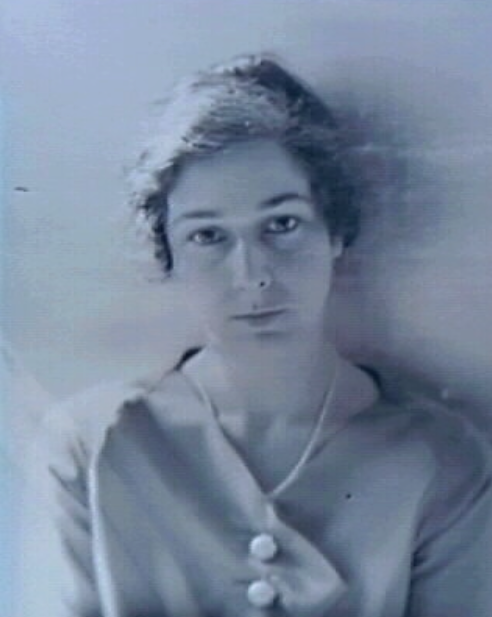

Kept by RoRo - Rose Etta Kahn Sampson, 1907-1997

The Sampson-Kahn family traces two distinct lines: the Kahn family of Oakland, California, prominent in retail and philanthropy, and the Sampson family of Georgetown, South Carolina, with roots in Charleston's early Jewish community. These lines merged in 1931 when Rose Etta Kahn married Dr. John Jacob Sampson in San Francisco.
Henry (Hertz) Kahn and Bela Kahn (née Goldstein) were the parents of Israel Kahn, who emigrated from Darmstadt, Hesse, Germany in 1848. Israel arrived in Baltimore on the ship Henry Shelton from Rotterdam. He married Sarah Bauer (1828-1888) and settled in Oakland, where he founded a dry goods business in 1879 at 10th and Broadway.
Israel and Sarah had five sons: Henry, Samuel, Solomon, Frederick, and John. Frederick Kahn (1860-1925), born in New York, joined the family business and later established Kahn Brothers Department Store with his brothers. The store moved in 1912 to a Beaux-Arts building designed by architect Charles W. Dickey at 16th and Broadway. The building featured a 120-foot elliptical dome and is now known as the Rotunda Building, designated Oakland Landmark #132 and listed on the National Register.
Frederick served as the first president of the Jewish Welfare Federation of the East Bay (founded 1918), was a founding member and president of Temple Sinai, and chaired the Advisory Committee of the Board of Education during a five-million-dollar school building program. He died August 19, 1925, at his home at 3933 Harrison Street, Oakland, and was buried at Home of Eternity Cemetery in Mountain View Cemetery, Oakland.
Frederick Kahn married Helen Lavenson (1872-1935) on May 20, 1872, in California. Helen was the daughter of Samuel Lavenson (1829-1900) and Caroline Heiman (1842-1872). Caroline died June 24, 1872, in Sacramento at age 29 or 30, the same year Helen was born. She was buried at Home of Peace Cemetery, Sacramento. Helen had two older sisters: Clara (born 1870) and Sara (born 1871).
Helen's uncle Albert S. Lavenson (1865-1930) was a partner and vice-president of Capwell's Department Store for 30 years beginning in 1890. He served as president of Temple Sinai, organized the Commercial Club (later the Oakland Chamber of Commerce), and chaired the Jewish Welfare Campaign of the East Bay in 1927. He was a music patron at Mills College and was responsible for the construction of the Music Building. Albert married Amy Furth, daughter of Gold Rush merchant Simon Furth, in 1894. Their daughter Alma Ruth Lavenson (1897-1989) became a noted photographer who studied under Edward Weston and Imogen Cunningham.
After Frederick's death in 1925, Helen established the Kahn Foundation in 1928. In 1965, the foundation donated $125,000 for 71 paintings to the Oakland Museum, forming the Kahn Collection of 19th-century California art, catalogued by Marjorie Arkelian. Helen died March 4, 1935, in Oakland.
Joseph H. Sampson (1823-1883) was born June 10, 1823, in Charleston, South Carolina. The Sampson family originated in Bury St. Edmunds, England, and appears in the records of Kahal Kadosh Beth Elohim in Charleston. Joseph became a prominent Jewish merchant and shipping operator in Georgetown, South Carolina, working with his brother Samuel. Georgetown had approximately 80 Jews by 1800, comprising about 10 percent of the white population and forming the second-largest Jewish community in South Carolina. The Jewish Cemetery in Georgetown was established in 1772.
Joseph married Esther "Hetty" Cohen (1832-1897), born June 30, 1832, in Charleston. Hetty was the daughter of Reverend Hartwig Cohen (1784-1861), spiritual leader of Charleston's Kahal Kadosh Beth Elohim, and Deborah Marks Cohen (1801-1888). Hartwig Cohen was born November 14, 1784, in Wartha, Frankenstein, Silesia, Prussia, and died October 12, 1861, in Winnsboro, Fairfield County, South Carolina.
After the Civil War, Joseph and Samuel Sampson revived their mercantile business and expanded into shipping. Joseph died July 14, 1883, in Georgetown and was buried in the Jewish Cemetery there.
Joseph and Hetty's son Arthur Fischel Sampson (1855-1934) was born July 1, 1855, in Georgetown. He attended medical school in South Carolina and practiced in Galveston, Texas, where he married Babette "Bettie" Levy (1868-1949) on April 4, 1887. Bettie was born March 24, 1868, in San Antonio, Texas, the daughter of Abraham Levy (1827-1879) and Esther Halff (1833-1908).
After the 1900 Galveston flood, Arthur moved his family to San Francisco in 1902. Their home on Franklin Street between Bush and Sutter was dynamited by the US Army as a firebreak during the 1906 earthquake. The family rebuilt on Washington Street near Laurel. Arthur and Bettie had five children: Joseph Abraham (1888), Arthur Jr. (1891), Cornelia "Nellie" (1893), Esther, and John Jacob (1898). Arthur died November 26, 1934, in San Francisco.
John Jacob Sampson was born April 28, 1898, in Galveston, Texas. He completed his medical degree before age 21, attending UC for three years before medical school. He served as a medical officer on a freighter to the Far East and India, then practiced with his father before joining the UCSF research and clinical staff. He served as Chief of Staff at Mount Zion Hospital and practiced as a cardiologist until his retirement at age 85.
John published 49 papers between 1926 and 1980 on topics including cardiac pain, pulmonary lymph flow, angina, and shock. He collaborated with Meyer Friedman (known for Type A behavior research), Herman Uhley, and Sanford Leeds at the Harold Brunn Institute for Cardiovascular Research. The John J. Sampson-Lucie Stern Endowed Chair in Cardiology was established at UCSF in his honor. He died December 24, 1987, in San Francisco.
Rose Etta Kahn was born December 10, 1907, in Oakland, California, the daughter of Frederick and Helen Kahn. She graduated Phi Beta Kappa from UC Berkeley in 1928. As a girl, she carried the key at the dedication of Temple Sinai. She became an award-winning weaver and wove furniture upholstery for the family's Seacliff home. One of her pieces, a cushion, is in the Haas-Lilienthal House.
Rose married John Jacob Sampson on May 17, 1931. After her mother's death in 1935, she became president of the Kahn Foundation. She volunteered at Mount Zion Hospital into her 80s. Rose died July 12, 1997, at Mount Zion Hospital of a lung embolism. A memorial service was held August 4 at Congregation Emanu-El.
Rose and John had three children: Deborah, John Frederick, and Janet.
Deborah Sampson Green was born January 11, 1934, in San Francisco. She became an educator, editor, and college instructor of English literature. She attended Lowell, Alamo, and Presidio Jr. High, and graduated from Wellesley in 1978. She married John R. Green (c.1921-c.1996) and lives in Seattle.
John Frederick Sampson was born March 18, 1935, in San Francisco. He attended Lowell High School (1953), Reed College (three years), received his AB from the University of San Francisco (1957), and attended Wharton (1960). He became an appraiser and real estate broker in San Francisco. He married Louise Adler in 1962 (divorced 1991), then married Sharon L. Litsky in 1999.
Janet Sampson Reider was born March 1, 1937, in San Francisco. She became a photographer (janetreider.com). She met Arthur Elliott "Pete" Reider at Lowell High School at age 13 and married him in 1958.
Deborah's son Caleb Green married Kate Banta-Green. They have two sons: Robert Bruce Banta-Green and Peter Caleb Banta-Green.
John Frederick Sampson's children with Louise Adler are Jennifer Ruth Sampson (born October 22, 1969, in San Francisco, lives in Berkeley), John Frederick Sampson Jr., and Juliet Margaret Sampson (born May 19, 1968, in San Francisco). Juliet married Simon Mays-Smith and lives in London. She works as a Country Financial Analyst.
Janet and Pete Reider's children are Jacob M. Reider (born June 25, 1963, in Boston), Suzie Reider (born March 29, 1965, in Boston), and Matt Reider (born December 22, 1969, in Boston).
Jacob married Alicia Ouellette, who served as 18th President and Dean of Albany Law School (2015-2023) and is now Dean at Lewis & Clark Law School. Jacob is a family physician who served as Deputy National Coordinator for Health IT at HHS (2011-2014). They have two children, Molly and Sampson, and live in Slingerlands, New York.
Suzie married Brian Smith. She is EVP of Lyft Media & Business at Lyft and was previously Global CRO at Waze. They have two daughters, Rose Reider Smith and Charlotte Reider Smith.
Matt married Alison Cohen (born August 7, 1972) on June 19, 2003. He works in software and lives in Oakland, California. They have two children: Max Nathan Reider (born March 3, 2007, in Oakland) and Zoe Ella Reider (born July 29, 2008, in Oakland).
Juliet and Simon Mays-Smith have three children: Isaac Mays-Smith, Noah Mays-Smith, and Rose Etta Mays-Smith (named after Rose Etta Kahn Sampson).
Through Esther "Hetty" Cohen's mother, Deborah Marks Cohen, there may be a connection to a Sephardic Portuguese line. Deborah was born Deborah Marks. The family name was anglicized from Marques. Her father was Samuel Mendel Marks, who moved to Charleston from New York. Her grandfather was Isaac Marks (1732-1776), who fought in the American Revolution as a private in the New York Militia and is listed in DAR family histories.
Multiple Geni and Ancestry trees identify Isaac's mother as Esther de Salomon Levy Maduro (1699-1759), but this connection lacks primary documentation. Esther de Salomon Levy Maduro was born December 16, 1699, and died July 30, 1759, in Curaçao, Netherlands Antilles. She was buried at Beth Haim Cemetery, Curaçao, section IV, row C, grave 621. She first married Jacob Rodriguez Marques on May 27, 1722, in Barbados. Jacob died around 1725. She then married Ishac de Shemuel Levy Maduro, who was buried in the adjacent plot IV-C-620. Isaac Marks was born in 1732 with an unknown father.
The birthplace of Bordeaux attributed to Esther in some trees is unsupported. The Levy Maduro family was based in Amsterdam and Curaçao. There are also contradictions in the Emmanuel volumes: "History of the Jews of the Netherlands Antilles" (1970) page 943 states she married Jacob in 1722, but "Precious Stones of the Jews of Curaçao" (1957) page 507 lists her as wife of Ishac de Shemuel. Some genealogical records show a different Esther de Salomon Levy Maduro y Namias de Castro born 1710 (not 1699) who married Isaac de Samuel Levy Maduro y Vieyra (1712-1784). The Geni profile may conflate two different women.
If the connection to Esther de Salomon Levy Maduro is accurate, the line traces back through rabbis in Amsterdam to Portugal in the 1400s. Esther's father was Ribi Hazzan Salomon de Mosseh Levy Maduro y Dias Sardo (1673-1752), a rabbi born in Amsterdam who arrived in Curaçao in 1672. His father was Hazzan and Ribi Mosseh de Salomon Levy Maduro (1649-1708), who married Hester Dias Sardo on July 13, 1670. Mosseh's father was Salomon (Salomão) de Moshe Levy Maduro (1629-1699), who married Chana de Castro on October 27, 1648, in Amsterdam. Salomon's father was Mosseh Levy o Maduro (c.1591-1640), born in Portugal and died in Amsterdam, who adopted the "Maduro" name and married Clara Rodriguez (also known as Rachel or Raquel) on July 27, 1622, in Amsterdam.
The documented ancestors before Mosseh Levy o Maduro are Solomon Levy, Salomon (Samuel) Levy, Antonio Ha Levy Abulafia, and Diogo Rodrigues and Clara Roiz (1400s, Portugal). These connections appear in genealogical databases but have not been verified with primary sources.
Matt Reider's DNA test showed 99 percent Ashkenazi ancestry, which does not support a significant Sephardic line. The Sephardic connection remains an open research question. The link through Isaac Marks is documented in multiple family trees but has gaps in verification.